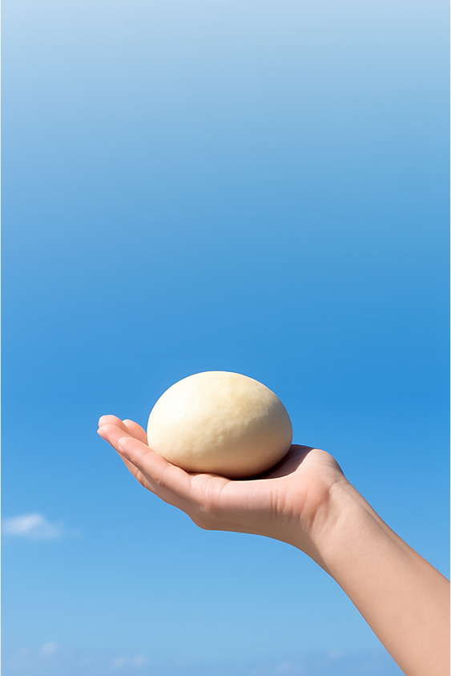
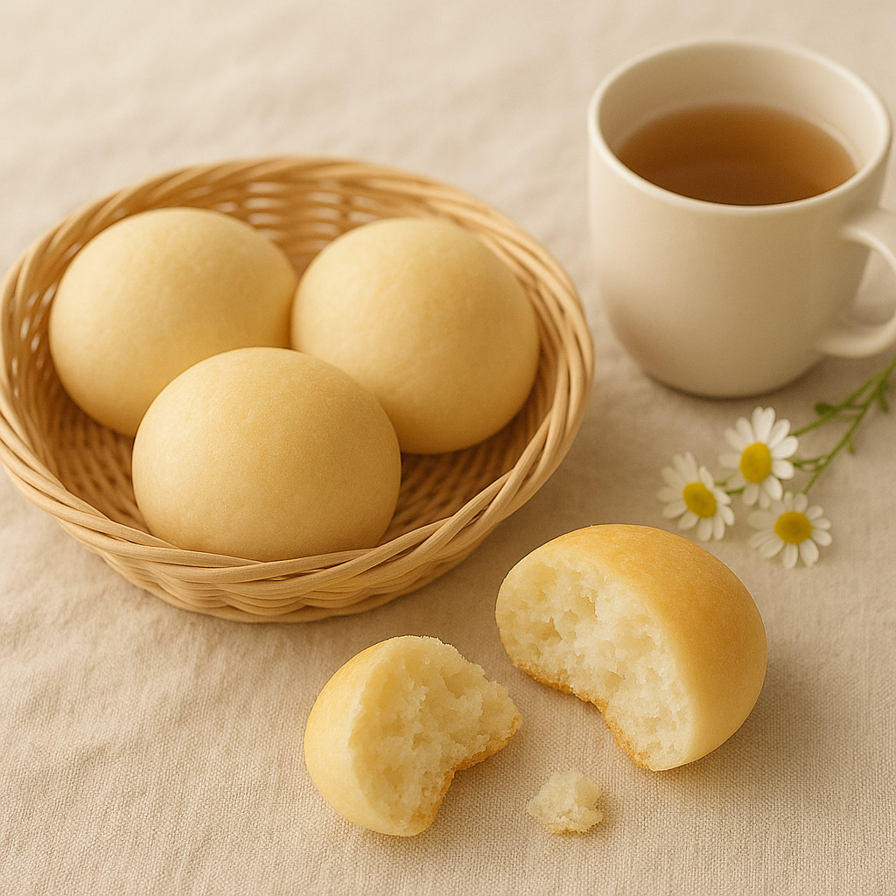

新しいのにどこか懐かしい
すっぴん素材の米粉パン
「そらとこめぱん」は、米粉100％でグルテンフリーのパンを主にオンラインで販売している、ちいさなパン工房です。
わたしたちのからだは、毎日の食事でつくられます。
だからこそ、使うのはシンプルで身体にやさしい国産素材と、日本古来からの発酵食品。
アレルギーのある方や、食事制限のある方にも「おいしいね」と笑顔になっていただきたいから、小麦・乳・卵など特定原材料7品目だけでなく、砂糖も使いません。
毎日食べても飽きのこない、素朴でほっとする味わい。
安心して食べられるパンが、空を見上げたときのようにふっと心を軽くしてくれますように――そんな想いを込めた米粉パンのお店です。
米粉は、毎日の食事を安心で健やかなものにしてくれます。
身体にも心にも、うれしいポイントがいっぱいです。
「パサパサしてそう」「硬くて食べにくそう」そう思われがちな米粉パン。
実はもっちりとした食感でやさしい甘みが感じられ、小麦パンとはひと味違うおいしさを楽しめるんです。
＼米粉ならでは／
しあわせのふわっともちもち食感
噛むほどに感じるやさしい味わい
冷凍保存でいつでも
自宅で焼き立てのおいしさ
＼米粉ならでは／
しあわせのふわっと
もちもち食感
噛むほどに感じる
やさしい味わい
冷凍保存で
いつでも自宅で
焼き立てのおいしさ
100％国産米粉を使用し、小麦粉を一切使いません。
小麦アレルギーの方にも安心してお召し上がりいただけます。
砂糖を使わず、発酵食品そのままの自然な甘みを生かしました。
健康管理にも配慮した、身体にやさしいおいしさです。
保存料や着色料などはもちろん、添加物が含まれているドライイーストも使わず、無添加にこだわっています。
小麦・乳・卵などの7大アレルゲンを使用していないため、幅広い方に安心しておいしくお召し上がりいただけます。
ミネラル豊富な沖縄産天然塩を使用し、おからパウダーや豆乳を加えています。身体にうれしい栄養素をプラスしました。